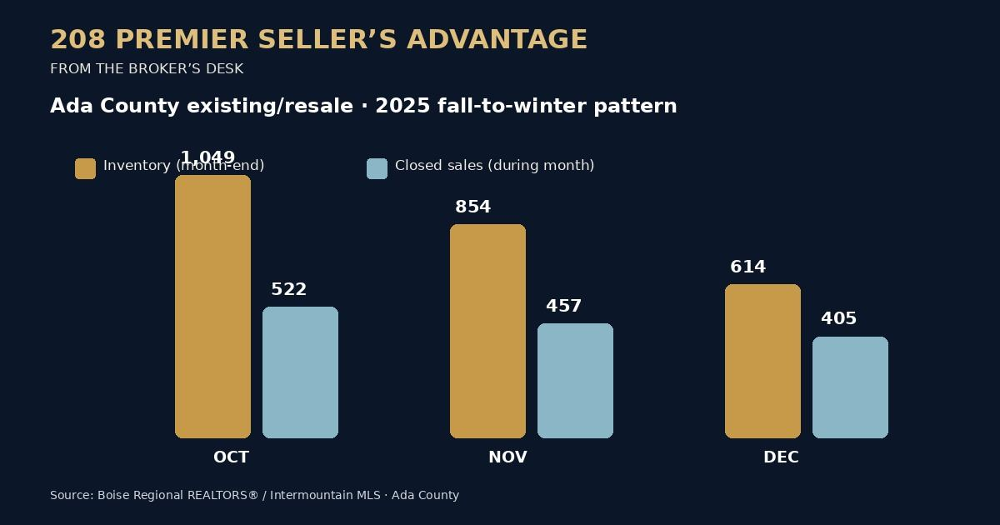

208 Premier Seller’s Advantage · From the Broker’s Desk
🚨 Don’t Assume December Means No Buyers: Ada County Had 405 Resale Closings Last December
If you are thinking about taking your home off the market for winter, pause before assuming that waiting until spring will produce a better result. Winter is slower, yes. But buyers do not disappear, and the number of competing resale homes can shrink more sharply than the number of completed sales.
I have closed transactions on both Christmas Eve and New Year’s Eve multiple times. December has also been among my busiest months. That is my experience as a broker, not a prediction for every home. The data gives us a way to examine the season without pretending one month guarantees an outcome.
What Ada County resale data showed last winter
Boise Regional REALTORS® reports existing/resale single-family homes separately from new construction. The table compares monthly closed sales with the inventory snapshot for Ada County.
Ada County resale homes in inventory, October to December 2025: down about 41.5%.
Ada County resale closings, October to December 2025: down about 22.4%.

Source: Boise Regional REALTORS® / Intermountain MLS, Ada County Existing/Resale monthly reports for October 2025, November 2025, and December 2025. BRR explains its data sources and methodology.
These percentage changes are calculated from BRR’s counts. Inventory is the number of homes available at a point in time; closed sales are transactions completed during a month. They measure different things. The comparison shows seasonal movement, not cause and effect or a guarantee that a specific listing will sell.
December still had active buyers
In December 2025, 405 existing/resale single-family homes closed in Ada County. That is fewer than October’s 522, but it is not zero demand. Sellers who stayed on the market were also competing against 614 resale homes in inventory rather than October’s 1,049. Buyers still had options; they simply had fewer resale options countywide.
Boise Regional REALTORS®’ latest available September 2026 report, released October 9 and based on IMLS data as of October 8, counted 955 existing/resale homes in inventory and 610 resale closings in Ada County. Resale inventory was down 3.6% from August and 16.2% from September 2025. September resale closings were down 7.3% month over month but up 18.2% year over year. These are county-level figures, not Boise, Eagle, or Meridian city statistics. October’s monthly report is not yet available as of October 28.
Source: BRR September 2026 Ada County Stat Sheet.
Rates may move either way—plan for uncertainty
Mortgage rates matter to buyer purchasing power, but no one can promise they will rise or fall. Freddie Mac’s weekly survey put the average 30-year fixed mortgage rate at 7.32% on October 22, 2026, down from 7.40% the prior week. One week’s movement does not establish where rates go next. If rates rise, some buyers may qualify for less; if they fall, some buyers may return or stretch further. Neither outcome is assured.
Source: Freddie Mac Primary Mortgage Market Survey, October 22, 2026.
Should you stay listed—or wait?
Decide based on the property’s competition, buyer response, condition, price, your moving timeline, and carrying costs—not a blanket rule that winter is dead or spring is automatically better. Before withdrawing, review:
- Comparable resale homes actively competing in your price range and location.
- Whether showing feedback points to price, presentation, access, or a permanent property feature.
- Your estimated net proceeds and carrying costs if you sell now versus wait.
- How your home is positioned against new construction as well as resale listings.
If you are getting few showings, waiting for spring does not fix a pricing or presentation mismatch. On the other hand, if your household’s timing calls for a pause, the data alone should not push you to sell before you are ready.
A seller’s plan should fit the home
I own and operate 208 Premier Real Estate. I’ll review the recent comparable sales, active competition, presentation, and estimated selling costs with you. If a flat-fee listing is the right fit, my seller-focused option is at Flat Fee Boise.
See Flat Fee Boise Seller Services Call or text Jeff: (208) 807-7789Each seller’s situation is different. No result or sale timing is guaranteed.
Market data describes past activity and is not a forecast. Ada County statistics should not be treated as city-level figures or as a valuation of an individual property. Check current MLS data before making a pricing decision.